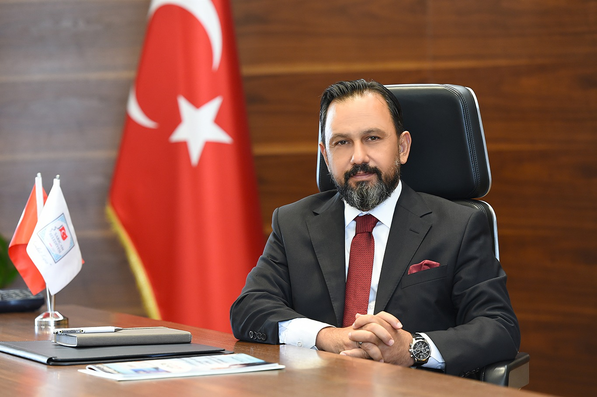

69 mahallenin geleceği için hazırlanan plan, iklim zirvesinde tanıtıldı.
SARIÇAM BELEDİYE BAŞKANI
Bilal Uludağ.
Sarıçam için, hep birlikte.
Çalışmalar, buluşmalar ve kent yaşamından notlar.

GÜNDEM
Gündemden seçmeler.
Ferdi Tayfur, doğum gününde sanat merkezinde düzenlenen programla anıldı.
Cumhuriyet ve Kadınlar Programı, farklı alanlardan katılımcıları buluşturdu.